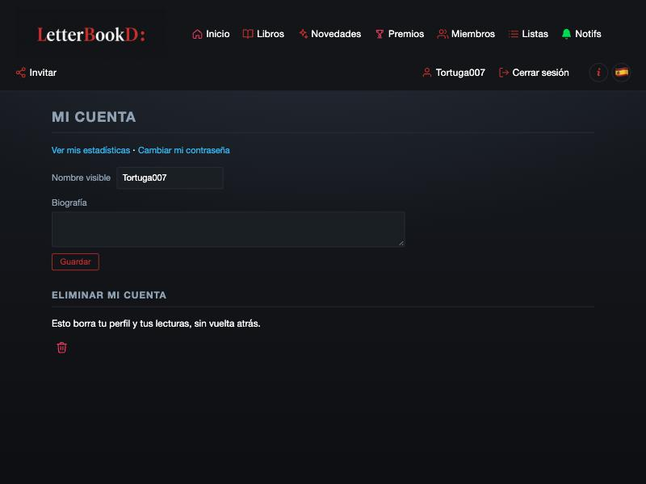

Mi cuenta
Para qué sirve: Personalizar tu identidad en el club (nombre de usuario, biografía) y gestionar la seguridad (contraseña). También puedes consultar tus estadísticas de lectura y eliminar definitivamente tu cuenta si quieres salir.

Recorrido
Arriba, dos enlaces rápidos: «Ver mis estadísticas» (página de estadísticas personales) y «Cambiar mi contraseña». Debajo, el formulario de perfil: «Nombre visible» (tu nombre público) y «Biografía» (texto libre, visible en tu perfil para los miembros de tus clubs). Haz clic en «Guardar» para aplicar los cambios. Más abajo, la sección «Eliminar mi cuenta»: un icono de papelera abre una confirmación. La eliminación es definitiva: perfil, lecturas, reseñas, listas, todo se borra.
Cadenas de acción
Cada fila describe un disparador en la interfaz, el modal o formulario que abre, y el efecto producido.
| Disparador | Modal / Campos | Efecto |
|---|---|---|
| Enlace «Ver mis estadísticas» | — | Abre tu página de estadísticas: número de libros leídos, media de notas, autores favoritos y evolución en el tiempo. |
| Enlace «Cambiar mi contraseña» | Formulario allauth: contraseña anterior + nueva (dos veces). | Sustituye tu contraseña. Las demás sesiones abiertas siguen siendo válidas. |
| Botón «Guardar» (formulario de perfil) | Nombre visible (nombre de usuario, obligatorio), Biografía (texto libre, opcional). | Actualiza tu perfil. Los cambios aparecen en todos los lugares donde se muestra tu nombre de usuario. |
| Icono de papelera bajo «Eliminar mi cuenta» | Formulario de confirmación (página aparte). | Elimina definitivamente tu cuenta, tus lecturas, reseñas, listas e invitaciones. Acción irreversible. |